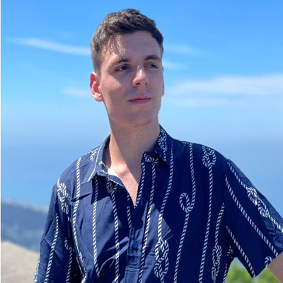

Diogo Goulart
Desenvolvedor Web | Criativo | Solucionador de Problemas
Desenvolvedor Web | Criativo | Solucionador de Problemas
I am a developer specialized in creating solutions through code, using technologies such as HTML, CSS, JavaScript, PHP, and frameworks like React.js and Laravel. I have experience in both personal and client projects, working on the visual development of applications as well as implementing practical and efficient solutions. Continuous learning is one of my key traits, as I always strive to stay updated with best practices, new technologies, and market trends. Programming has been part of my daily routine since 2022. In 2025, I founded Fluxon Digital, a startup focused on innovative technology solutions, where I currently serve as CEO.
